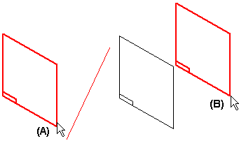
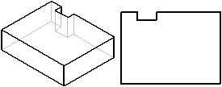
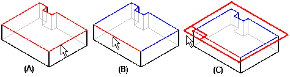

Examples: Defining reference plane orientation (ordered)
You can create global reference planes using the commands on the Home tab, or you can create local reference planes using the reference plane options on the command bar when constructing a feature.
When you create a new reference plane based on an existing reference plane (A), the x-axis orientation of the new reference plane (B) matches the x-axis orientation of the existing reference plane.

When you define a new reference plane based on a part face, you can quickly create a new reference plane where the x-axis orientation and origin is determined automatically or you can define the x-axis orientation and origin yourself.
Defining the reference plane X-Axis and origin automatically
To quickly create a new reference plane where the x-axis orientation and origin is determined automatically, you can use the following options:
-
Coincident Plane
-
Parallel Plane
When you use these options to create a new reference plane based on a part face (A), the x-axis orientation (B) of the new reference plane is automatically defined using a linear edge (C) on the part face.

If the face you select does not have any linear edges, the x-axis orientation of the new reference plane is defined using one of the default reference planes (A).

Defining the reference plane X-Axis and origin yourself
To create a new reference plane where you control the x-axis orientation and origin, you can use the following options:
-
Coincident Plane By Axis
-
Angled Plane
-
Perpendicular Plane
-
Plane Normal To Curve
-
Plane By 3 Points
For example, suppose you wanted to define a new reference plane relative to the top face of the part, and you want it to be oriented as shown on the right side.

Using the Coincident Plane By Axis option, you can do this by selecting the top face (A) as the planar face, then the bottom edge (B) as the x-axis of the new reference plane. Then click near the left end of the plane (C) to define the origin. Notice that when you position your mouse near the left end, a dynamic representation of the new reference plane is displayed.

How do I
Create a coincident reference planeCreate a Coincident Reference Plane (ordered)
Create a coincident reference plane by axis (ordered modeling)
Create a reference plane by 3 points
Create a reference plane by 3 points (ordered)
Create a reference plane normal to a curve
Create a reference plane normal to a curve (ordered)
Create a tangent reference plane (synchronous)
Create a tangent reference plane (ordered)
Create a parallel reference plane
Create an angled reference plane
Create a perpendicular reference plane
Resize a reference plane
Change reference plane name display
Learn more
Working with reference planesReference planes in assemblies
Look up more details
Coincident Plane command (ordered)Coincident Plane command (synchronous)
Coincident Plane command bar
By 3 Points command
By 3 Points command bar
Normal to Curve command
Normal to Curve command bar
Tangent Plane command
Tangent Plane command bar
Parallel Plane command
Parallel Plane command bar
Angled Plane command
Angled Plane command bar
Coincident Plane By Axis command
Coincident Plane By Axis command bar
Perpendicular Plane command
Perpendicular Plane command bar
Create Reference Plane command bar
Edit Reference Plane command bar
Reference plane command bar
Reference Plane Selection command bar
Resize Plane command
Resize Plane command bar
Show All Reference Planes command
Hide All Reference Planes command